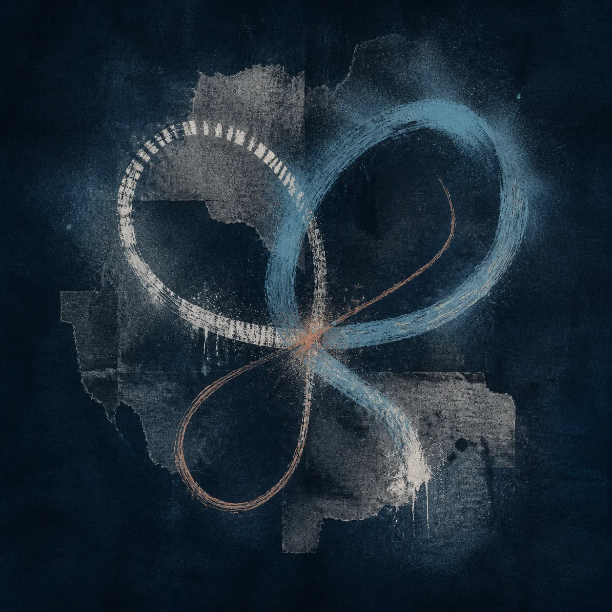
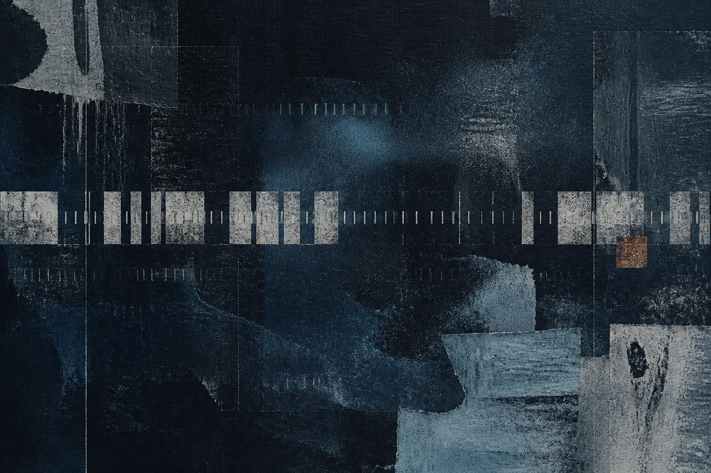
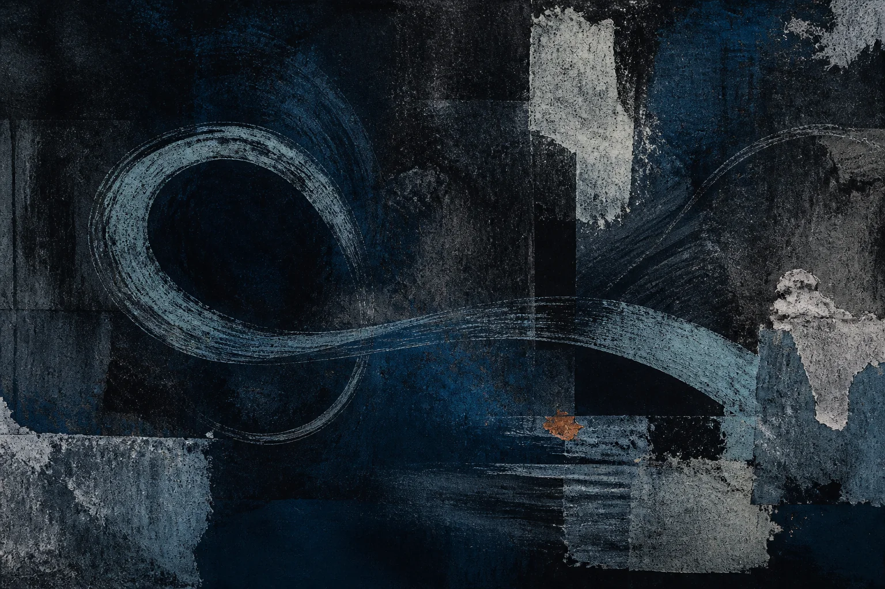
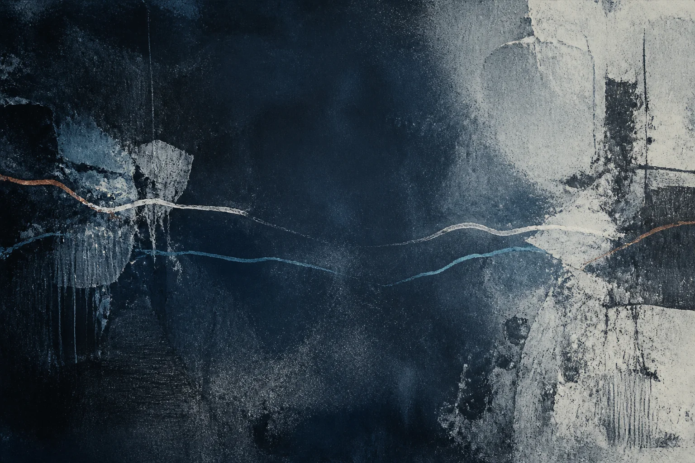
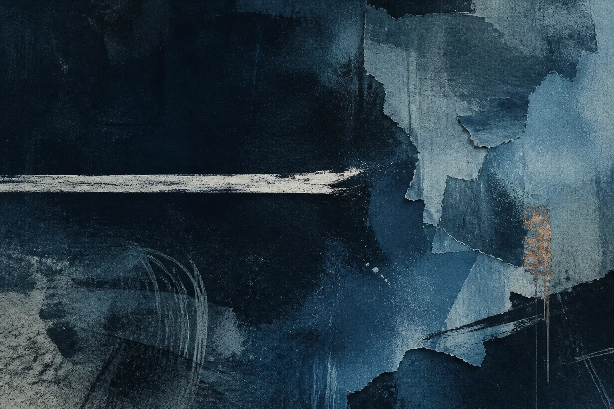
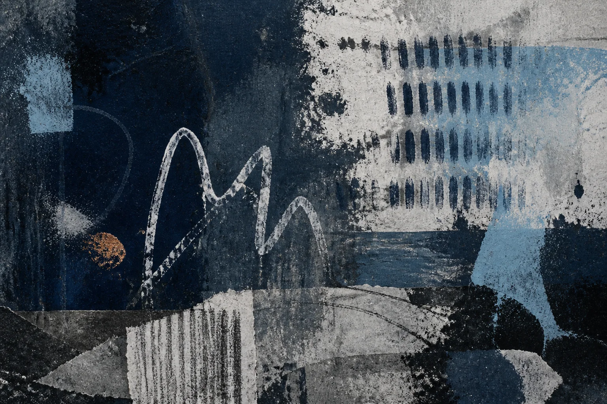
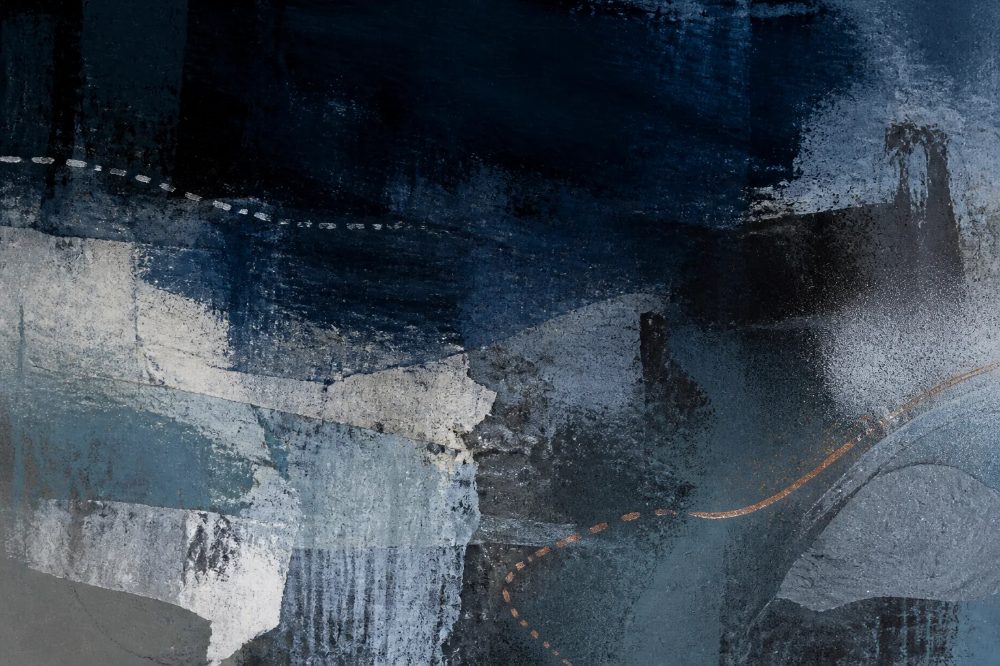
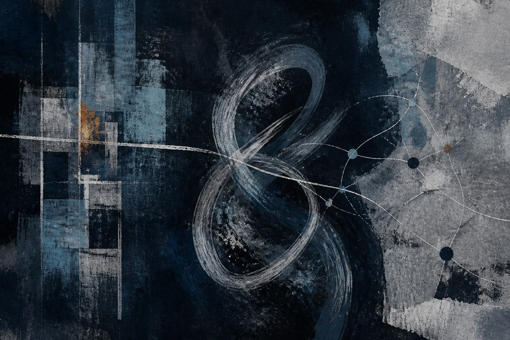

three clocks · 3/4
Непрерывность
Три времени человеческой непрерывности: системная запись, телесная память и место, которое сохраняют отношения.
Статья «Временный чат на годы» даёт живую сцену дружбы, выдерживающей месяцы и годы молчания: канал помогает людям находить друг друга после пауз, память отношений обходится без непрерывного отчёта, а внутри этой связи одновременно идут три разных времени.
Система хранит последовательность зарегистрированных состояний, человек продолжает практику в теле и памяти, а другие люди удерживают его место в отношениях; три формы непрерывности поддерживают друг друга, сохраняя собственный ритм.
Системное время

Системная непрерывность состоит из событий, которые удалось зарегистрировать: публикаций, входов, версий, метрик, строк биографии, истории аккаунта. Для базы данных человек представлен состоянием R₁, затем R₂, затем R₃, поэтому год без нового события выглядит как разрыв в последовательности.
Сила системного времени проявляется в сохранности: видео может ждать двадцать лет, имя индексируется, репозиторий показывает историю изменений, медицинская запись помогает врачу увидеть давний риск, а зарегистрированный след переносит сведения через расстояние и человеческое забывание; эта сохранность требует формализации и удерживает ту часть происходившего, которую удалось перевести в схему системы. Система может хранить эти следы для последующей заботы или работы, оставляя промежуток между необходимыми обновлениями свободным от непрерывного поведенческого журналирования.
В 2024 году я отметил двадцать лет программирования, начало которого мог отнести приблизительно к 2003–2004 годам, потому что старые интернет-артефакты сохранили достаточно дат и имён для проверки. Системная запись дала биографии подтверждённую точку, хотя сама история началась раньше доступного следа и долго состояла из занятий, которым ещё не требовался публичный адрес.
Первый компьютер я увидел в 1995 году на работе у мамы и играл там в DOS-версию The Lion King; затем появились несколько старых Macintosh в школе, компьютерные клубы и места общего доступа, где интернет продавали недорогими отрезками времени, журналы и книги, а к 2005 году публичное сетевое пространство уже позволяло поддерживать устойчивые отношения на расстоянии. Архив точно датирует сохранившиеся страницы и оставляет за их пределами годы чтения, первых упражнений и встреч с устройствами, из которых для меня выросла эта линия.
Архив предлагает человеку особый договор: система сохраняет биографию настолько, насколько биография принимает её поля, форматы и правила обновления. В медицинской истории такая формализация может обеспечить непрерывность лечения между врачами, в репозитории она позволяет продолжить чужую работу, а в дневнике возвращает слова, которые память давно переписала. Вместе с этой силой приходит отсечение контекста, потому что схема уверенно хранит зарегистрированное значение и оставляет за пределами причины молчания, изменение отношения и опыт, для которого поля не существовало.
Сохранённая запись служит свидетельством прошлого, но превращается в источник жизни только при новом человеческом действии. Архив движения способен напомнить последовательность, хотя тело заново находит равновесие; история переписки сохраняет фразы, хотя дружбу продолжает готовность ответить через несколько лет; старый проект компилируется, хотя его значение для автора могло закончиться. Различие становится политически важным, когда доступность архива даёт учреждению или аудитории повод требовать продолжения прежней роли.
Лента добавляет к хранению ритм свежести: старое состояние остаётся в архиве, пока видимость человека поддерживают новые сигналы, и молчание постепенно снижает узнаваемость. Вопрос «где твои последние видео-материалы?» переносит этот технический ритм в разговор и принимает отсутствие нового медиаобъекта за отсутствие практики. Когда представление может циркулировать, не закрепляя, что именно произошло, лента требует нового зарегистрированного состояния; «Антидигитизм» называет институциональную форму этого требования дигитизмом у двери.
Джордж Вудкок в 1944 году назвал часы главной машиной машинного века: они превратили длительность в товар, который можно мерить и продавать, а формула «время — деньги» сделала табельщика ключевой фигурой нового порядка (Вудкок, 1944). Системное время наследует этот циферблат. Зарегистрированные состояния становятся новой разметкой, а лента требует свежести так, как фабрика требовала пунктуальности.
Личное время

Когда предметы достаёшь после года в шкафу, сначала возвращается вес, затем знакомый способ поставить ладонь и только потом движение; часть навыка исчезла, а часть сохранилась без свидетелей. Пауза могла прийти из работы, болезни, другого интереса, усталости или изменения жизненного ритма, пока тело продолжало отношение с предметом через способность узнавать, забывать и возвращаться.
В исследованиях обучения ускоренное повторное освоение после прежней практики называют savings, сбережением времени при переучивании; этот эффект наблюдали в разных когнитивных и двигательных задачах (Albert et al., 2023). Его механизмы зависят от задачи и длительности паузы, а быстрое возвращение не доказывает сохранность цельного навыка, поэтому здесь достаточно более скромного вывода: предшествующий опыт способен изменить новое обучение даже после заметного распада результата.
Личная непрерывность включает изменения, из-за которых возвращение не восстанавливает точную прежнюю версию: вкус сдвинулся, возможности тела изменились, старые цели потеряли убедительность, и связь с практикой теперь живёт в способности соединить прежний опыт с сегодняшним действием.
Машинная обработка делает этот ритм заметнее: в «Инференции и Пробабилистикуме» отдельный вычислительный проход производит результат без проживаемой нити сознания между запросами, тогда как остальные события жизни продолжают менять человека даже в годы, когда практика не занимает его внимания.
Личное время плохо служит доказательством, поскольку годы внутреннего отношения к музыке или движению остаются невидимыми, память ошибается, навык распадается, а желание меняется, однако принадлежащая человеку без еженедельной валидации непрерывность позволяет практике сохранять смысл в период, когда её нельзя предъявить.
Время отношений

Реляционная непрерывность хранится между людьми: человек исчезает на три года, появляется снова и слышит «ты снова здесь», потому что другие удерживали часть его места без постоянного сигнала присутствия. Знакомство могло стать слабее, ожидания могли измениться, однако возвращение встречает общую историю, которой нет в одном профиле.
Платформенная среда способна подставить системное время на место реляционного, превращая «мы давно его не видели, но он один из нас» в «он давно ничего не публиковал и, наверное, бросил». Подмена выглядит технической, потому что лента умеет показывать свежие представления, а люди замечают вернувшееся тело; принимая ритм ленты, сообщество передаёт системе часть обязанности помнить людей.
Реляционная память возвращает принадлежность и одновременно удерживает старую роль: знакомые помнят музыканта, аудитория ждёт автора, семья хранит образ талантливого ребёнка. Человек возвращается изменившимся к месту, сохранённому в прежней форме, поэтому непрерывность отношений нуждается в возможности пересмотреть ожидание и освободить память от долгового характера.
Право исчезнуть, оставаясь участником отношений, отделяет принадлежность от постоянной доступности и существует там, где группа может сказать «мы давно его не видели», продолжая считать связь реальной без превращения паузы в дисциплинарное нарушение и без требования заранее объявленной даты возвращения. Такая терпимость имеет пределы, поскольку совместная работа, забота или обещание создают конкретные обязательства; важным остаётся различие между обязательством перед людьми и обязанностью непрерывно поддерживать машинный сигнал о себе.
Память группы тоже требует труда и распределяется неравномерно: кто-то хранит контакты, приглашает исчезнувших, пересказывает общую историю новым людям и замечает, когда автоматическая лента перестала показывать знакомого. Передача всей этой работы платформе кажется экономией, пока её критерий свежести не начинает решать, кого группа помнит. Реляционная непрерывность сохраняется через конкретные жесты, включая редкое письмо, открытое приглашение и признание человека после долгого молчания.
Право на разрыв

Современная публичная биография любит последовательную линию: интерес становится навыком, навык результатом, результат идентичностью, а идентичность начинает требовать дальнейшего развития. Остановка быстро получает сюжет о потерянной аудитории, нереализованном таланте и сходе с траектории, а архив делает прежнюю роль доступной другим людям и повышает цену следующего шага.
Психология развития, включая работу Джеймса Марсиа, описывает идентичность через исследование возможностей и принятие обязательств, что даёт осторожную аналогию для временного интереса: он создаёт пространство примерки, а раннее публичное закрепление добавляет свидетелей к обязательству. В этих границах рамка помогает увидеть, как фраза «из этого получится профессия» открывает путь и одновременно переносит ценность настоящего в предполагаемое будущее.
«Кризис хобби» уже разбирает раннюю аудиторию через обзор Перес-Торрес и вывод о цене прекращения. Здесь следующий шаг принадлежит праву на разрыв: возможность бросить занятие защищает смысл самой пробы, потому что исследование идентичности нуждается в пересмотре прежних обязательств.
Непрерывность остаётся человеческой, пока включает право прекратить линию: уйти без прощального поста, не объяснить отсутствие, не превращать возвращение в публичное событие, сменить имя занятия или однажды закончить навсегда, сохранив реальность уже прожитого часа как часть биографии независимо от последующего решения.
То же право защищает долгий период слабого умения, в котором неловкая музыка радует играющего, ненужная программа решает домашнюю задачу, а рисунок выполняет всю работу в моменте, когда рука учится видеть; мастерство иногда вырастает из этой области, чья ценность уже состоялась в прожитом времени.
Право на участие

В добровольной практике качество не определяет право человека продолжать. Человек может годами играть три аккорда, повторять один удобный трюк, собирать технически нелепое устройство или рисовать без заметного прогресса, потому что занятие организует вечер, даёт телу ритм, поддерживает дружбу или остаётся приятным способом думать. Оценка результата возможна и иногда желанна, однако она не получает юрисдикции над самим участием.
Оптимизация меняет этот договор, когда каждый сеанс должен улучшать измеримый показатель и оправдывать следующий. Плато превращается в проблему, смена критерия выглядит потерей фокуса, а возвращение на более простой уровень считывается как регресс, хотя человеческая практика движется через травмы, возраст, новое любопытство и разные количества свободного времени. Непрерывность тогда требует права продолжаться хуже прежнего и права заново определить, что считается хорошим.
Внешняя награда способна поддержать обучение, но ранняя привязка занятия к признанию меняет ответ на вопрос, ради чего человек возвращается. Работы Леппера и соавторов, а также Райана и Деси показывают зависимость эффекта от устройства награды и контекста, поэтому здесь важна институциональная осторожность: сцена, школа и семья могут отмечать достижение, сохраняя полноценное место для игры, которая ничего не доказывает.
Пауза, забота и возвращение

Пауза бывает свободным выбором, а бывает следствием депрессии, болезни, бедности, ухода за близким, потери жилья, миграции или исчезнувшего доступа к месту и предметам. Романтизация перерыва способна скрыть эти причины и оставить человека без помощи, поэтому право на паузу включает заботу об условиях возвращения: доступный зал, сохранённый инструмент, сообщение без требования отчёта, гибкий взнос и память о том, что отсутствие могло быть вынужденным.
Музыкант, потерявший жильё, может продать инструмент и перестать отвечать группе, пока архив продолжает показывать концерты и прежнюю профессиональную роль. Через два года помощь с инструментом и местом для репетиции открывает реальную возможность вернуться, однако навыки, слух и желание уже изменились, а человек может нуждаться прежде всего в связи с друзьями. В таком случае забота поддерживает несколько исходов одновременно: совместную игру на новом уровне, присутствие без выступления, другую деятельность рядом с группой или спокойное завершение музыкальной части общей истории.
Забота сохраняет за человеком решение продолжить, закончить, сменить практику или оставить прошлый опыт без нового обязательства; если помощь требует возврата, она становится способом восстановить прежнюю продуктивность и возвращает тот же долг под добрым именем. Уважение к непрерывности означает поддержку доступного пути, а выбор направления остаётся за тем, чья жизнь изменилась.
Возвращается также другой человек: тело переносит последствия травмы и возраста, социальная роль меняется, прежняя техника теряет привлекательность, а старый коллектив успевает выработать новый язык. Настоящее возвращение создаёт отношение между прошлым опытом и нынешними возможностями. Иногда из него возникает новая форма практики, иногда одна встреча завершает старую линию, и в обоих случаях архив, тело и отношения признают прожитое без требования бесконечного продолжения.
Три часа

Конфликт трёх времён можно увидеть в одном возвращении, когда профиль показывает последнюю публикацию пятилетней давности и классифицирует человека как неактивного, тело узнаёт знакомое движение вместе с новыми ограничениями, а друзья одновременно помнят прежнее мастерство и встречают сегодняшнего участника. Ошибка начинается, когда один из этих часов получает власть над остальными: архив требует соответствовать сохранённому образу, телесная память убеждает человека, что прежняя роль в группе всё ещё действует, или чужая память отказывает ему в завершении.
Более бережный договор использует каждый источник в его области: система хранит доступное свидетельство и честно показывает пробелы, тело определяет сегодняшнюю возможность, отношения предлагают связь без гарантии прежней формы, а решение о продолжении возникает между ними в настоящем времени, превращая непрерывность в способ соединять изменения и сохранять право на необратимый разрыв.
Различие часов позволяет также вовремя заметить конфликт: техническая задача требует восстановить запись, забота о теле предлагает замедлиться, а отношения могут сохранять приглашение, пока человек решает, какая форма продолжения ему сейчас доступна.
Три часа остаются различимыми, пока молчаливый промежуток вмещает забывание, переоценку, чужую заботу и обычную жизнь. После него рука иногда снова поднимает предмет с пола, а иногда шкаф остаётся закрытым; оба исхода принадлежат прожитой биографии.
Следующая статья, «Свобода второго порядка», спрашивает, как личные решения меняют эти условия для остальных, когда повторяются достаточно часто.
Источники
- James E. Marcia. “Development and Validation of Ego-Identity Status.” Journal of Personality and Social Psychology 3(5), 1966. https://doi.org/10.1037/h0023281
- Mark R. Lepper, David Greene, Richard E. Nisbett. “Undermining Children’s Intrinsic Interest with Extrinsic Reward.” Journal of Personality and Social Psychology 28(1), 1973. https://doi.org/10.1037/h0035519
- Richard M. Ryan, Edward L. Deci. “Self-Determination Theory and the Facilitation of Intrinsic Motivation, Social Development, and Well-Being.” American Psychologist 55(1), 2000. https://doi.org/10.1037/0003-066X.55.1.68
- Scott T. Albert et al. “A double dissociation between savings and long-term memory in motor learning.” 2023. https://pmc.ncbi.nlm.nih.gov/articles/PMC10138789/
- Vanesa Pérez-Torres. “Social media: a digital social mirror for identity development during adolescence.” Current Psychology 43, 2024. https://doi.org/10.1007/s12144-024-05980-z
- George Woodcock. “The Tyranny of the Clock.” War Commentary — For Anarchism, March 1944. https://theanarchistlibrary.org/library/george-woodcock-the-tyranny-of-the-clock